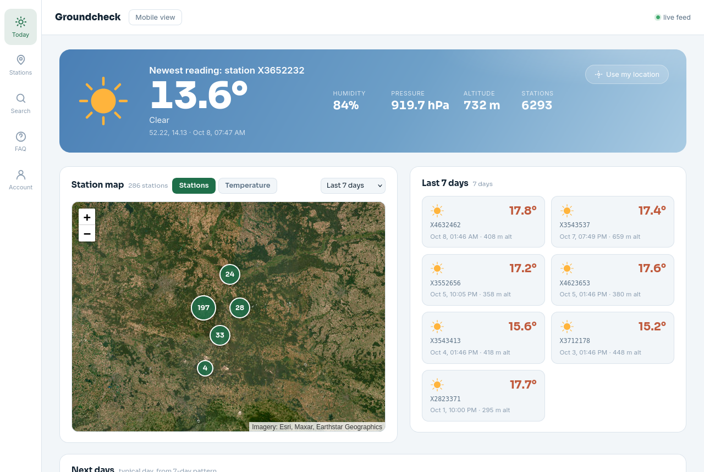

Groundcheck Desktop
Live radiosonde ground-temperature weather, in its own window — no browser tab required.

🌡️
Real radiosonde data
Ground-level temperature pulled straight from live weather-balloon soundings, not a model estimate.
🗺️
Interactive map
Browse every reporting station on a live, color-coded temperature map you can scrub by date.
📍
Auto-located
Finds your nearest station automatically, with an IP-based fallback if location access is off.
🕑
Full history
Look back through any station's past readings, not just the current snapshot.
Installing
- Unzip the download and drag Groundcheck.app into Applications.
- Since it isn't code-signed, macOS will block the first launch as "unidentified developer."
- Right-click (or Control-click) the app → Open → confirm. After that it opens normally, every time.